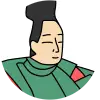

Spin & Discover Kakekotoba!Poem 51: Fujiwara no Sanekata Ason

Try to find the kakekotoba hidden in the poem and tap it.
The word you tap will spin right where it is, revealing its two meanings in turn.
かくとだに
えやはいぶきの
さしも草
さしも知らじな
もゆる思ひを
Commentary
This poem has two kakekotoba hidden within it.
A kakekotoba layers two meanings onto a single word that sounds the same either way.
The first is "ibuki." It carries both the place name "伊吹" (Ibuki) and "言ふ" (to say).
The second is "hi." It carries both the final syllable "hi" of "omoi" (feeling) and "火" (fire).
I cannot even begin to tell you how much this feeling of mine burns for you. Just as you likely have no idea how fiercely the sashimo-grass of Mount Ibuki can burn, you surely have no idea how fiercely this fire-like feeling of mine burns inside me.
By layering the place name together with the image of fire, the poem skillfully expresses a love that burns ever brighter.
Packing two meanings into just thirty-one syllables is exactly what makes kakekotoba so appealing.
Vocabulary
Even just to say that I feel this way.
How could I possibly ~? No, I cannot. Expresses a rhetorical question.
The name of a medicinal herb that grows on Mount Ibuki, used to make moxa.
You surely have no idea it is this bad.
Burning fiercely, as if aflame.
A feeling held within one's heart.
Burning fire. Echoes the "hi" in "omoi."